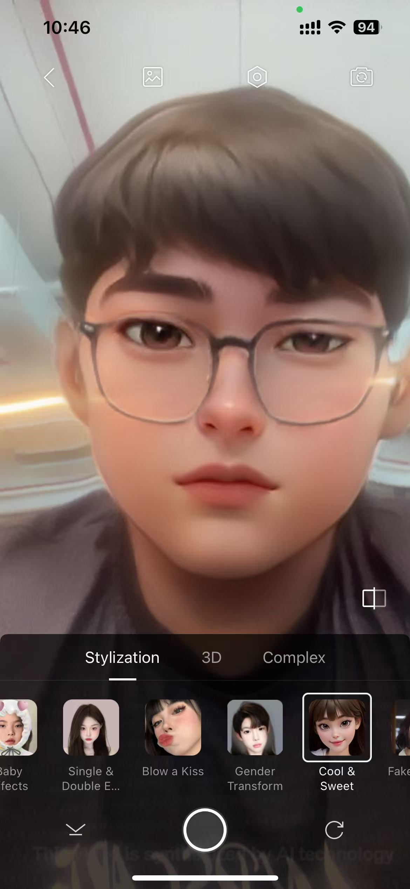
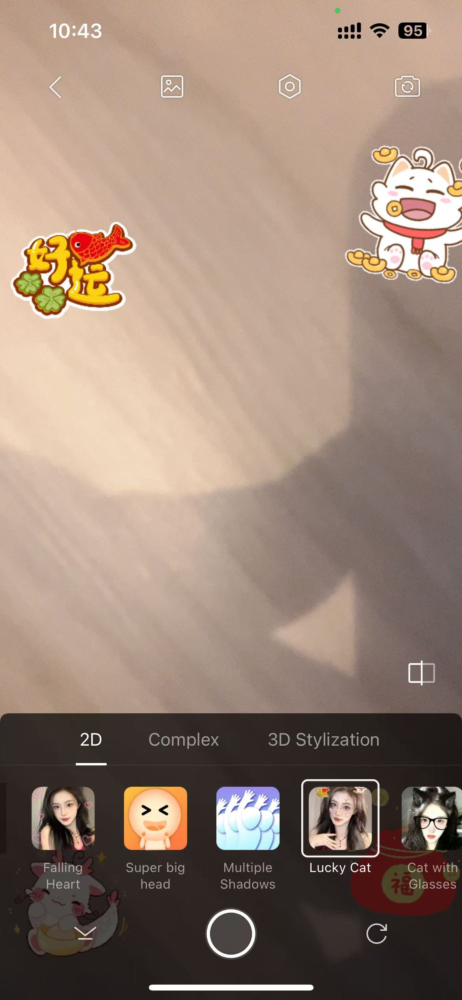
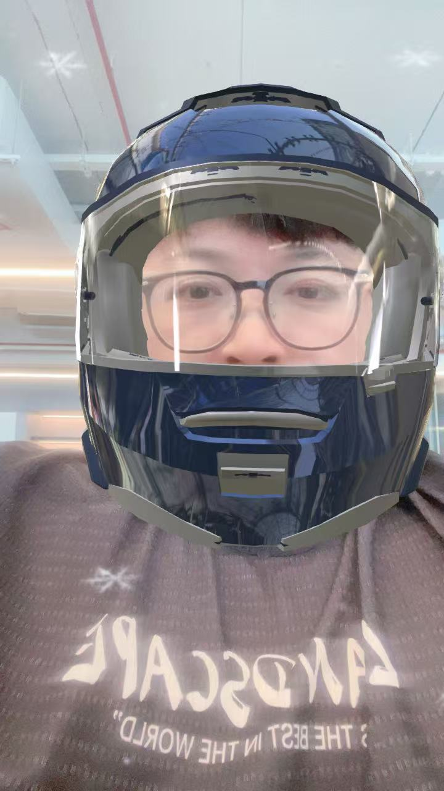
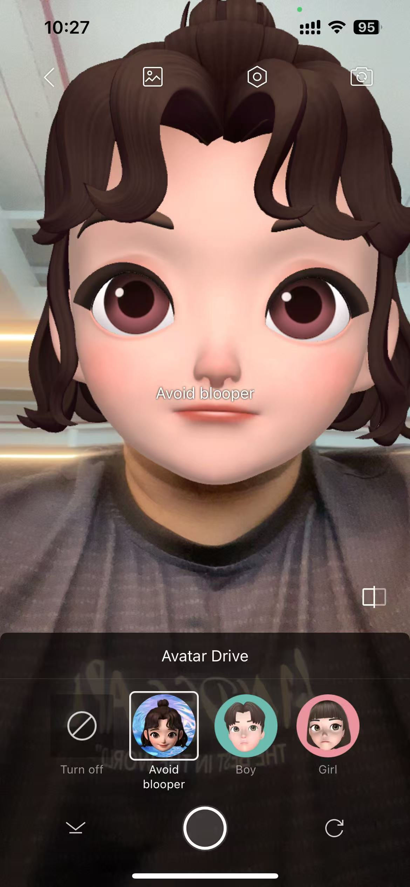

虚拟形象

数字虚拟形象系统，用3D虚拟角色替代用户的真实外观。系统实时捕捉面部表情和动作并映射到虚拟角色上，在保持自然沟通的同时保护隐私。
优势
- 隐私保护 - 用户无需展示真实面貌
- 减轻视频通话疲劳感
- 通过可定制形象展现个性
- 较低的带宽消耗
- 在低光环境下依然表现良好
劣势
- 可能降低在专业场合的真实感
- 潜在的"恐怖谷"效应
- 在捕捉细微表情方面存在技术限制
- 可能被视为缺乏个人接触感
- 不适用于需要正式人脸识别的场景
AR贴纸/挂件

可叠加在用户视频画面上的增强现实元素。这些虚拟配饰、贴纸或动画效果会跟随用户移动，可用于增添趣味、季节主题或品牌元素。
优势
- 为会议增添趣味性和互动元素
- 创造共享欢乐时刻，增强团队凝聚力
- 适用于主题通话（节日、庆祝活动）
- 可融入品牌元素增强企业形象
- 使通话更加难忘和具有吸引力
劣势
- 在严肃讨论中可能造成干扰
- 在某些场合可能显得不够专业
- 处理要求可能影响设备性能
- 可能分散对谈话内容的注意力
- 并非所有参与者都会欣赏这些趣味元素
头部3D挂件

专为附着在用户头部设计的3D增强现实饰品，如帽子、头盔、面具或其他头戴虚拟物品，可自然跟随用户头部移动。
优势
- 比2D贴纸创造更强的视觉冲击力
- 可用于角色扮演或模拟场景
- 与用户外观实现更逼真的融合
- 适用于教育演示或培训
- 可表现专业设备（安全装备、制服）
劣势
- 需要更强的处理能力
- 可能遮挡面部表情
- 更复杂的跟踪可能导致画面抖动
- 在专业环境中使用场景有限
- 如果过于复杂或动画效果过多可能分散注意力
背景模糊和背景替换

实时分割技术将用户与背景分离，使背景可以被模糊处理或完全替换为虚拟图像或视频。
优势
- 通过隐藏个人环境保护隐私
- 无论环境如何都能保持专业形象
- 减少对其他参与者的视觉干扰
- 帮助集中注意力于发言者
- 可以集成企业品牌背景，提升企业形象
劣势
- 边缘检测可能不完美，造成视觉瑕疵
- 需要良好的光线条件才能获得最佳分割效果
- 更高的处理要求可能影响性能
- 用户快速移动时替换背景可能出现不自然
- 可能导致音频（房间声学）与视觉环境不匹配
换头

将用户的面部替换为另一个面部或风格化版本的技术，同时保持表情和动作，在隐私保护和表情保留之间取得平衡。
优势
- 改变外观的同时保持自然面部表情
- 比完整虚拟形象系统计算负担更轻
- 比完整虚拟形象更好地保留非语言沟通线索
- 可用于创建标准化的团队形象
- 可以在光线条件不佳的情况下改善外观
劣势
- 如果实现不完美可能显得诡异
- 隐私保护程度低于完整虚拟形象替换
- 与完整虚拟形象相比定制选项有限
- 关于身份表示可能存在伦理问题
- 不适合正式验证目的